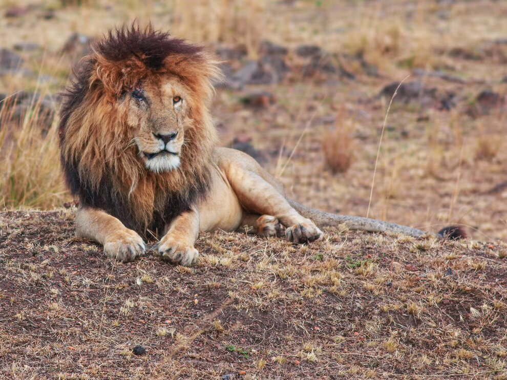

ScarFace got his name after a territorial fight in 2012. Scar's eye got injured during the dispute (which Scarface won alongside his brothers Morani, Hunter, and Sikio). Scarface was a well-known lion that lived on a reserve in Masai Mara, Kenya, from 2007 to 2021. He was so famous that he even had a dedicated Facebook page. He became a star beloved by millions after being featured on wildlife shows on National Geographic and the BBC's Big Cats Diary until he died in 2021 at age 14. The Masai Mara National Reserve & Conservancies are over 500 square miles of unfenced reserve privately owned and managed by Masai families.
Scarface the lion (Scar), curled up like a housecat in the grass, his thick dew-covered mane sparkling in the sun. His brothers Hunter, Sikio, and Morani were nearby; they also slept. The Four Musketeers, known for their prowess and savagery, instead looked precious where they lay.
Though they all are well known, Scar is the real celebrity. To see him in real life is considered a “thing.” In Kenya's Masai Mara, when travelers on safari compare notes there's one defining factor, those who've seen Scar and those who have not.
Compared to the other 3 Musketeers, Scarface was perhaps the most gentle and loving male Lion I have ever seen with cubs. Unlike other male Lions I have observed, Scarface was very tolerant of his cubs as you would often find him babysitting and even let the cubs play with his big fluffy mane. I also observed him and the pride fighting over a small Warthog kill and he was chasing away all the females from the carcass so that the small youngsters could eat as he stood guard.
Photographers from around the world quake with delight at the sight of him. (You can find additional photos and videos on the Scarface the Lion Facebook page.)
Scar's virility is legendary and coupled with his rugged good looks—a black widow's peak and a mane that sweeps back from his forehead like a villain in a Disney flick—he embodies every bit the “King of the Jungle.”
The Mara Predator Conservation Programme said on Facebook: “At 1pm local time, Scarface took his last breath. He died in peace without any disturbance from vehicle and hyenas.